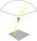

—
O
—
O
ALIS_4D
Auroral Large Imaging System

Reproducerbarhet
"Works on my machine"
DevOps

$$
R = f \sin(\theta \alpha) \\
\theta = \frac{1} {\alpha} \operatorname{asin} \left( \frac{f} {R} \right)
$$
AIDApy
Auroral Image Data Analysis
Trigonometri + Linjär algebra
Rotationsmatriser och coordinatsystem


def starpos(ra, decl, date_i, utc, lat, long):
"""az, ze and apparent zenith angles for a sky object"""
# calculate local sidereal time.
rsidtime = utc2losidt(date_i, utc, long) / 12 * pi
rra = ra.transpose() / 12 * pi
rdecl = decl.transpose() / 180 * pi
rlong = long / 180 * pi
rlat = lat / 180 * pi
t = (date2juldate(date_i) - 2451545.0) / 36525
d = date2juldate(date_i) - date2juldate([1985, 1, 1])
# Cartesian coordinates on the celestial sphere
r = eye(3)
r[0, :] = cos(rdecl) * cos(rra)
r[1, :] = cos(rdecl) * sin(rra)
r[2, :] = sin(rdecl)
# rigorous precession
Za = (0.6406161 * t + 0.0000839 * t ** 2 + 0.0000050 * t ** 3) / 180 * pi
za = (0.6406161 * t + 0.0003041 * t ** 2 + 0.0000051 * t ** 3) / 180 * pi
ta = (0.5567530 * t + 0.0001185 * t ** 2 + 0.0000116 * t ** 3) / 180 * pi
P = [[-sin(Za) * sin(za) + cos(Za) * cos(za) * cos(ta),
-cos(Za) * sin(za) - sin(Za) * cos(za) * cos(ta),
-cos(za) * sin(ta)],
[sin(Za) * cos(za) + cos(Za) * sin(za) * cos(ta),
cos(Za) * cos(za) - sin(Za) * sin(za) * cos(ta), -sin(za) * sin(ta)],
[cos(Za) * sin(ta), sin(Za) * sin(ta), cos(ta)]]
# replace unimplemented nutation(Obsdate,utc) scilab function with
# its default output
N = eye(3)
rp = N * P * r
rdecl = arcsin(rp[3, :])
rra = arctan(rp[2, :] / cos(rdecl), rp[1, :] / cos(rdecl))
rcorrdecl = rdecl
cosaz = cos(rra)
sinaz = sin(rra)
rcorrra = rra
alt = arcsin(
cos(rsidtime - rra) * cos(rdecl) * cos(rlat) + sin(rdecl) * sin(rlat))
ze = pi / 2 - alt.transpose()
sina = sin(rsidtime - rra) * cos(rdecl) / cos(alt)
cosa = (cos(rsidtime - rra) * cos(rdecl) * sin(rlat) - sin(rdecl) * cos(
rlat)) / cos(alt)
az = arctan(sina.transpose(), cosa.transpose()) + pi
apze = refrcorr(ze)
return az, ze, apze
def starpos(ra, dec, utcTime, lat, long, alt=0):
"""az, ze and apparent zenith angles for a sky object.
Using astropy SkyCoord."""
ra = np.array(ra * u.hourangle)
dec = np.array(dec * u.degree)
sky_coord = SkyCoord(ra, dec, frame=FK5, unit=(u.hourangle, u.degree))
earth_location = EarthLocation.from_geodetic(lat=lat * u.degree,
lon=long * u.degree,
height=alt)
observation_time = Time(utcTime)
sky_obj = sky_coord.transform_to(AltAz(obstime=observation_time,
location=earth_location))
vectorized_refrcorr = np.vectorize(refrcorr)
apze = vectorized_refrcorr(sky_obj.zen.radian)
return sky_obj.az.radian, sky_obj.zen.radian, apze
class TestAstropyStarposHasSimilarResultToScilabImplementation:
def setup(self):
# BSC5P catalog objects 1-indexed 197,961,9033,9041,9058,9074
self.ra = np.array(
[0.7775,
3.2633333,
23.912944,
23.944861,
23.988528,
0.0361667] * u.hourangle)
self.decl = np.array(
[69.325,
57.140833,
0.1091667,
22.648056,
6.8633333,
27.081944] * u.degree)
def test_for_optiklab_2020(self):
lat = 67.840722
long = 20.411111
utcTime = "2020-12-21 19:09:00"
az, ze, apze = starpos(self.ra, self.decl,
utcTime,
lat,
long)
az_sci = np.array([5.0895443,
2.6148459,
3.8705633,
3.985045,
3.8820959,
3.9897205])
ze_sci = np.array([0.1693805,
0.2042894,
1.2718188,
0.8912492,
1.1527829,
0.8109606])
apze_sci = np.array([0.1693324,
0.2042311,
1.2709067,
0.8909012,
1.1521501,
0.8106647])
rel_to_scilab_ze = _great_circle_distance(az, ze, az_sci, ze_sci)
rel_to_scilab_apze = _great_circle_distance(az, apze, az_sci, apze_sci)
npt.assert_allclose(rel_to_scilab_ze, np.zeros(6), atol=1e-03)
npt.assert_allclose(rel_to_scilab_apze, np.zeros(6), atol=1e-03)
Vectorization

class StarCatalog:
"""Abstract Base Class for accessing listed properties
from Star Catalogues like BSC5P"""
ra = np.array([], dtype=float)
dec = np.array([], dtype=float)
magnitude = np.array([], dtype=float)
bright_star_no = np.array([], dtype=int)
| Memory | 1 | 2 | 5 | 8 | 4 | 3 |
|---|---|---|---|---|---|---|
| Odd | x | x | x | |||
| >2 | x | x | x | x | ||
| Masked | 5 | 3 |
def inv_project_directions(self, u, v, image_size, cmtr=None):
"""Transfers pixels line of sight to azimuth and zenith angles"""
phi, theta = self.inv_model(u, v, image_size)
return self._relative_to_local_horizon(phi, theta, cmtr)
class TestProjectionTransferEdgeCases:
@pytest.fixture(autouse=True)
def transfer_and_its_inverse_with_edge_cases(self):
self.camera = Camera(
horizontal_focal_length=6.13576098e-01,
vertical_focal_length=-6.13937768e-01,
alpha_rotation=3.11357351e+01,
beta_rotation=7.86213938e+00,
gamma_rotation=3.04635402e+00,
horizontal_displacement=3.88947223e-03,
vertical_displacement=-2.14373428e-02,
pinhole_deviation=1.00651214e+00,
)
shape = (1024, 1024)
self.shape = shape
edges = [
np.full((shape[0],), 0, dtype=np.int64),
np.arange(shape[1], dtype=np.int64),
np.full((shape[0],), shape[1] - 1, dtype=np.int64),
np.arange(shape[1], dtype=np.int64)[::-1],
]
self.u = np.hstack(edges)
self.v = np.hstack(edges)
# each test runs here
yield
npt.assert_allclose(self.u_prime, self.u, atol=12)
npt.assert_allclose(self.v_prime, self.v, atol=12)
def test_alis_projection(self):
self.camera.optical_transfer = alis3d
self.camera.inverse_optical_transfer = inv_alis3d
az, ze = self.camera.inv_project_directions(self.u, self.v, self.shape)
self.u_prime, self.v_prime = self.camera.project_directions(az, ze,
self.shape)